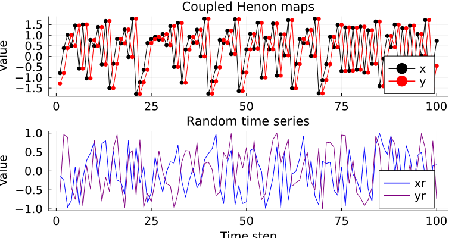
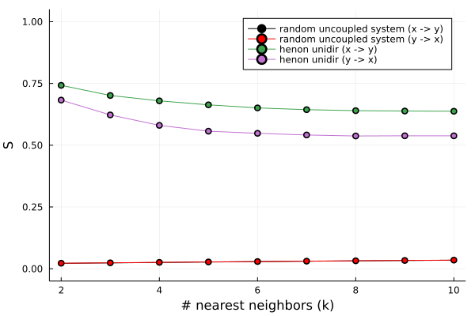

S-measure
CausalityTools.SMeasure.s_measure — Functions_measure(x::AbstractDataset, y::AbstractDataset;
K::Int = 2, metric = SqEuclidean(), tree_metric = Euclidean()) → Float64
s_measure(x::AbstractVector, y::AbstractVector;
K::Int = 2, metric = SqEuclidean(), tree_metric = Euclidean(),
dx::Int = 2, my::Int = 2, τx::Int = 1, τy::Int = 1) → Float64
s_measure(x::AbstractDataset, y::AbstractVector;
K::Int = 2, metric = SqEuclidean(), tree_metric = Euclidean(),
dx::Int = 2, τx::Int = 1) → Float64
s_measure(x::AbstractDataset, y::AbstractVector;
K::Int = 2, metric = SqEuclidean(), tree_metric = Euclidean(),
dy::Int = 2, τy::Int = 1) → Float64S-measure [Grassberger1999][Quiroga2000] for the directional dependence between univariate/multivariate time series x and y.
Returns a scalar s ∈ [0, 1], where s = 0 indicates independence between x and y, and higher values indicate synchronization between x and y, with complete synchronization for s = 1.0.
Input data
The algorithm is slightly modified from [1] to allow univariate time series as input. In that case, these time series are embedded using the parameters mx/τx (dimension/lag for time series x) or my/τy (dimension/lag for time series y). For custom embeddings, do the embedding yourself and input Datasets as both x and y.
- If
xandyaredxanddy-dimensionalDatasets, respectively, then usexandyas is. - If
xandyare scalar time series, then createdxanddydimensional embeddings, respectively, of bothxandy, resulting inNdifferentm-dimensional embedding points $X = \{x_1, x_2, \ldots, x_N \}$ and $Y = \{y_1, y_2, \ldots, y_N \}$.τxandτycontrol the embedding lags forxandy. - If
xis a scalar-valued vector andyis aDataset, or vice versa, then create an embedding of the scalar time series using parametersdx/τxordy/τy.
In all three cases, input datasets are length-matched by eliminating points at the end of the longest dataset (after the embedding step, if relevant) before analysis.
Description
Let $r_{i,j}$ and $s_{i,j}$ be the indices of the
K-th nearest neighbors of $x_i$ and $y_i$, respectively.Compute the the mean squared Euclidean distance to the $K$ nearest neighbors for each $x_i$, using the indices $r_{i, j}$.
\[R_i^{(k)}(x) = \dfrac{1}{k} \sum_{i=1}^{k}(x_i, x_{r_{i,j}})^2\]
- Compute the y-conditioned mean squared Euclidean distance to the $K$ nearest neighbors for each $x_i$, now using the indices $s_{i,j}$.
\[R_i^{(k)}(x|y) = \dfrac{1}{k} \sum_{i=1}^{k}(x_i, x_{s_{i,j}})^2\]
- Define the following measure of independence, where $0 \leq S \leq 1$, and low values indicate independence and values close to one occur for synchronized signals.
\[S^{(k)}(x|y) = \dfrac{1}{N} \sum_{i=1}^{N} \dfrac{R_i^{(k)}(x)}{R_i^{(k)}(x|y)}\]
Example
using CausalityTools
# A two-dimensional Ulam lattice map
sys = ulam(2)
# Sample 1000 points after discarding 5000 transients
orbit = trajectory(sys, 1000, Ttr = 5000)
x, y = orbit[:, 1], orbit[:, 2]
# 4-dimensional embedding for `x`, 5-dimensional embedding for `y`
s_measure(x, y, dx = 4, τx = 3, dy = 5, τy = 1)Example: random data vs Henon maps
Here, we'll compute the S-measure between random time series (uniform noise), between time series of a dynamical system (coupled Henon maps).
We start by generating the time series.
using CausalityTools, DynamicalSystems, Plots, Distributions
npts, Ttr = 10000, 5000
x, y = columns(trajectory(henon2(c_xy = 0.87), npts - 1, Ttr = Ttr))
xr, yr = rand(Uniform(-1, 1), npts), rand(Uniform(-1, 1), npts)
[x y xr yr]10000×4 Matrix{Float64}:
-0.790085 -1.28521 -0.12015 -0.564736
0.390202 -0.790085 -0.244863 0.959471
1.01072 0.390202 -0.96006 0.891112
0.495512 1.01072 -0.771763 -0.445752
1.45768 0.495512 0.105387 -0.745233
-0.576185 1.45768 -0.902991 0.0979827
1.50532 -0.576185 -0.182007 -0.917069
-1.03883 1.50532 0.279554 0.132993
0.772425 -1.03883 0.472202 -0.479776
0.49171 0.772425 0.771581 0.811963
⋮
-0.41355 1.25765 0.386455 0.941892
1.60627 -0.41355 0.459299 -0.0156578
-1.30418 1.60627 0.778857 -0.870739
0.181009 -1.30418 0.424235 0.697715
0.975983 0.181009 0.532004 0.163297
0.501759 0.975983 0.605364 0.937966
1.44103 0.501759 -0.0530352 0.752521
-0.526048 1.44103 -0.346674 -0.904842
1.55558 -0.526048 -0.654542 0.65715Let's plot the time series.
p_det = plot(xlabel = "", ylabel = "Value", title = "Coupled Henon maps")
plot!(x[1:100], label = "x", marker = stroke(:black), c = :black)
plot!(y[1:100], label = "y", marker = stroke(:red), c = :red)
p_rand = plot(xlabel = "Time step", ylabel = "Value", title = "Random time series")
plot!(xr[1:100], label = "xr", c = :blue)
plot!(yr[1:100], label = "yr", c = :purple)
plot(p_det, p_rand, layout = grid(2, 1), size = (382*2, 400), legend = :bottomright,
tickfont = font(13), guidefont = font(13), legendfont = font(13))
Now we compute the S-measure between the random time series, both from x to y and from y to x. We'll also do the same for the Henon maps.
The test parameters are embedding dimensions (dx for the source and dy for the target), the embedding lags (τx for the source and τy for the target), and the number of nearest neighbors K. We'll compute the test with fixed embedding parameters, but a varying number of nearest neighbors (ks = 2:10).
For the sake of demonstration, we'll use the same embedding parameters both for the source and for the target, for all analyses. For a real use case, embedding parameters should be chosen more carefully, and will, in general, be different for the source and for the target.
dx, dy = 5, 5
τx, τy = 1, 1
# Compute the s-measures for different values of k
ks = 2:10
ss_r_xy = [s_measure(xr, yr, dx = dx, τx = τx, dy = dy, τy = τy, K = k) for k in ks]
ss_r_yx = [s_measure(yr, xr, dx = dx, τx = τx, dy = dy, τy = τy, K = k) for k in ks]
ss_henon_xy = [s_measure(x, y, dx = dx, τx = τx, dy = dy, τy = τy, K = k) for k in ks]
ss_henon_yx = [s_measure(y, x, dx = dx, τx = τx, dy = dy, τy = τy, K = k) for k in ks]
plot(xlabel = "# nearest neighbors (k)", ylabel = "S", ylims = (-0.05, 1.05))
plot!(ks, ss_r_xy, label = "random uncoupled system (x -> y)", marker = stroke(2), c = :black)
plot!(ks, ss_r_yx, label = "random uncoupled system (y -> x)", marker = stroke(2), c = :red)
plot!(ks, ss_henon_xy, marker = stroke(2), label = "henon unidir (x -> y)")
plot!(ks, ss_henon_yx, marker = stroke(2), label = "henon unidir (y -> x)")
For uncoupled time series, we expect the value of $S$ to be close to zero. For strongly coupled time series, the value of $S$ should be nonzero and approaching 1. This is exactly what we get: for time random time series, the value of $S$ is close to zero and for the Henon maps, it's clearly non-zero.
Note that the actual dynamical coupling in the Henon system is unidirectional from x to y. The results (positive $S$ in both directions), however, indicate that the coupling is bidirectional, with the coupling being stronger in one direction. This disagreement between results and ground truth highlights the importance of employing causal hypothesis testing. For this, we could use TimeseriesSurrogates.jl to generate surrogate time series. An in-depth example on how to use surrogate testing can be found in the transfer entropy example.
- Quiroga2000Quian Quiroga, R., Arnhold, J. & Grassberger, P. [2000] “Learning driver-response relationships from synchronization patterns,” Phys. Rev. E61(5), 5142–5148.
- Grassberger1999Arnhold, J., Grassberger, P., Lehnertz, K., & Elger, C. E. (1999). A robust method for detecting interdependences: application to intracranially recorded EEG. Physica D: Nonlinear Phenomena, 134(4), 419-430.